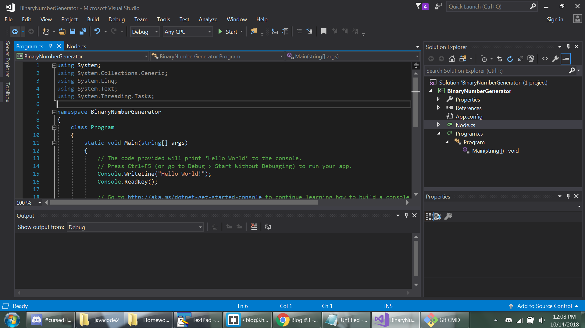
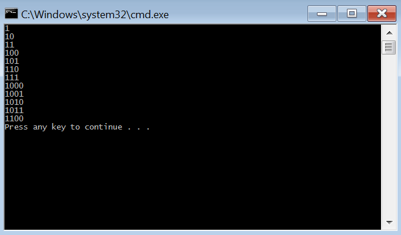

This is a Blog Post for Homework Assignment #4.
This will be a demo for Homework Assignment #3
This is a Repo for Homework Assignment #3
This took way longer than it needed to. Evidently, early CS classes at Western are taught in Java. Meaning that by this point, pretty much everyone's good on their Java compiling setup. I've worked in Java before, but the last time was in 2012. Technically I knew the procedure for getting it to work, but it had been long enough that I had to poke around to get it to work again.
Finally, after reinstalling the JDK, reestablishing path variables, and hooking up the magic-compilation-words to my code editor, I was able to compile the code. Like an hour in, and I was finally ready to literally look at the very base of what we had to do.
Speaking of things that took a long time... After Visual Studio finished installing, getting it up and running was at least simple. You make a new C# console project, and just go from there. It's convenient for things to like... Just compile. Without having to mess with it for ages. So that was nice!
The next step was to actually start translating the code over. As per the recommendation, I started with the Node class. This was fairly straightforward, but I knew that I needed to add in some properties. These mainly take the form of setters and getters.
public T Data
{
get { return data; }
set { data = value; }
}
The other most noticable initial thing was commenting using XML. Typing three ///'s automatically 'filled in' the format, which marked up comments in such a way that they had useful information.
/// <summary>
/// Singly linked node object
/// </summary>
/// <param name="data">What's in the node</param>
/// <param name="next">The next node in the linked list</param>
Making the exceptions work wasn't too difficult, mainly just getting the formatting right.
class QueueUnderflowException : Exception
{
public QueueUnderflowException()
{}
public QueueUnderflowException(string message): base(message)
{}
}
To call the exceptions, all you needed is a simple throw new NullReferenceException();, or whatever exception you were trying to call.
In both Java and C#, it can be useful to employ 'generics'. Things like public Node<T> next;, where the 'T' is the generic. Basically it just means that it doesn't have to be any given data type. A node could contain an int, or it could contain a string, or it could contain any other sort of thing. It's proper to use them in data structures in most circumstances, since it helps keep the code more generalized.
It seemed a little hard to figure out the places where things should be different in the non-main files. It's kind of like one of those 'spot the difference' puzzles, where you need to figure out what minute things to change. Things like capitilazation and filenames (QueueInterface -> IQueue) are important, but difficult to spot sometimes.
Overall, this seemed fairly straightforward. Visual Studio was on the nose about suggesting the correct functions and other things related to what I was looking for, and when that didn't work, usually just consulting the C# documentation went pretty quick. After some brief testing, everything seemed to run smoothly.
